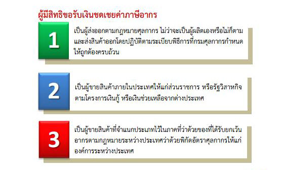
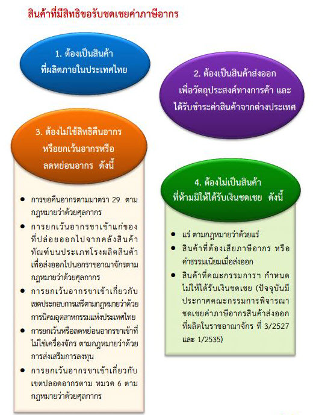
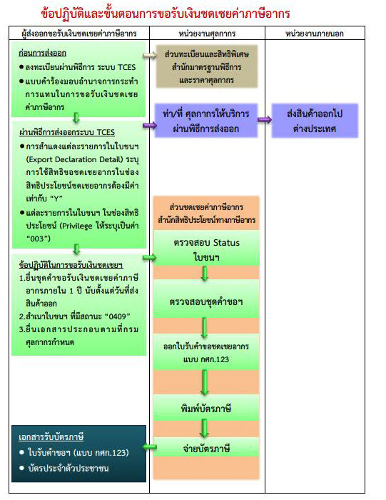
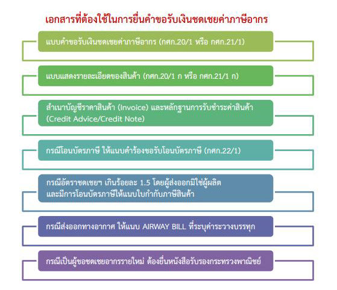
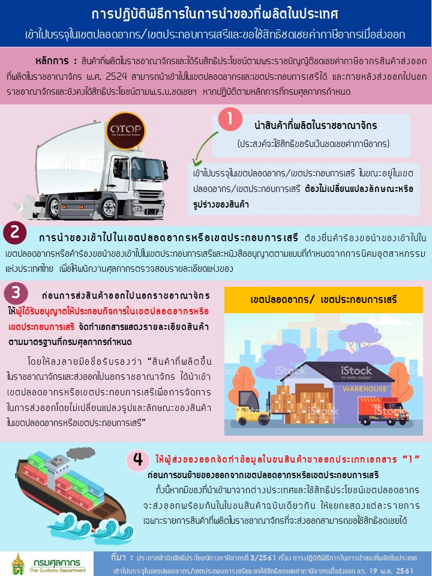

การชดเชยค่าภาษีอากร ตามพระราชบัญญัติชดเชยค่าภาษีอากร สินค้าส่งออกที่ผลิตในราชอาณาจักร พ.ศ. 2524 เป็นมาตรการหนึ่งของรัฐบาลเพื่อพัฒนาศักยภาพในการผลิตสินค้าส่งออกและสนับสนุนการส่งสินค้าที่ผลิตในประเทศไทยออกไปจำหน่ายต่างประเทศให้มากขึ้น เพื่อให้สามารถแข่งขันในตลาดต่างประเทศได้ โดยคณะกรรมการพิจารณาชดเชยค่าภาษีอากรสินค้าส่งออกที่ผลิตในราชอาณาจักร จะกำหนดอัตราเงินชดเชยค่าภาษีอากรสำหรับสินค้าที่ส่งออกและมีการจ่ายเงินชดเชยค่าสินค้าส่งออกในรูปแบบบัตรภาษี
คำจำกัดความที่สำคัญในการชดเชยค่าภาษีอากร
- คำว่า สินค้า หมายความว่า สินค้าที่ผลิตในราชอาณาจักร
- คำว่า ผลิต หมายความว่า ประกอบ แปรรูป แปรสภาพ หรือทำการอย่างใดอย่างหนึ่งให้มีขึ้น ซึ่งสินค้าไม่ว่าด้วยวิธีใดๆ
- คำว่า เงินชดเชย หมายความว่า เงินที่จะจ่ายชดเชยค่าภาษีอากรซึ่งมีอยู่ในต้นทุนการผลิตสินค้าส่งออกให้แก่ผู้มีสิทธิได้รับเงินชดเชยในรูปของบัตรภาษีตามพระราชบัญญัติชดเชยค่าภาษีอากรสินค้าส่งออกที่ผลิตในราชอาณาจักร พ.ศ. 2524
- คำว่า อัตราเงินชดเชยค่าภาษีอากร หมายความว่า อัตราเงินชดเชยสำหรับชนิดและประเภทสินค้าที่จะได้รับเงินชดเชยค่าภาษีอากรตามที่คณะกรรมการพิจารณาชดเชยค่าภาษีอากรสินค้าส่งออกที่ผลิตในราชอาณาจักรได้ประกาศในราชกิจจานุเบกษา
- คำว่า การส่งสินค้าออก หมายความว่า การส่งของออกตามกฎหมายว่าด้วยศุลกากร รวมถึงการขายสินค้าภายในประเทศให้แก่ส่วนราชการหรือรัฐวิสาหกิจตามโครงการเงินกู้หรือเงินช่วยเหลือจากต่างประเทศ และการขายสินค้าให้แก่องค์การระหว่างประเทศหรือหน่วยงานที่มีสิทธินำสินค้าเข้ามาในราชอาณาจักรโดยได้รับการยกเว้นอากรตามกฎหมายว่าด้วยพิกัดอัตราศุลกากร
ผู้มีสิทธิได้รับเงินชดเชยค่าภาษีอากร

- ผู้ทำการส่งออกตามกฎหมายว่าด้วยศุลกากร หรือผู้ที่ขายสินค้าภายในประเทศให้แก่ ส่วนราชการหรือรัฐวิสาหกิจตามโครงการเงินกู้หรือเงินช่วยเหลือจากต่างประเทศ หรือผู้ที่ขายสินค้าให้แก่องค์การระหว่างประเทศหรือหน่วยงานที่มีสิทธินำสินค้านั้นเข้ามาในราชอาณาจักรโดยได้รับการยกเว้นอากรตามกฎหมายว่าด้วยพิกัดอัตราศุลกากร
- ผู้มีสิทธิได้รับเงินชดเชยจะต้องไม่ได้ใช้สิทธิคืนหรือยกเว้นหรือลดหย่อนภาษีอากร ตามกฎหมายศุลกากรและกฎหมายอื่นสำหรับสินค้าส่งออก
- การส่งออกไปจำหน่ายยังต่างประเทศต้องปฏิบัติให้ถูกต้องครบถ้วนตามกฎหมายศุลกากรและได้รับชำระเงินค่าขายสินค้าจากต่างประเทศ ถ้าหากเป็นการส่งออกเพื่อวัตถุประสงค์อื่นที่ไม่ใช่ทางการค้าเช่น การส่งออกเพียงเพื่อเป็นตัวอย่าง หรือเพื่อการวิเคราะห์ หรือเพื่อการอื่นที่มิได้จำหน่าย ไม่สามารถขอรับเงินชดเชยได้
ผู้ไม่มีสิทธิได้รับเงินชดเชยค่าภาษีอากร
ผู้ไม่มีสิทธิได้รับเงินชดเชยค่าภาษีอากร ได้แก่ ผู้ส่งออกที่ได้ใช้สิทธิขอคืน หรือยกเว้นหรือลดหย่อนอากรขาเข้า สำหรับของที่ส่งออกที่ใช้สิทธิประโยชน์ ดังต่อไปนี้
- การขอคืนอากรตามมาตรา 29 ตามกฎหมายว่าด้วยศุลกากร
- การยกเว้นอากรขาเข้าแก่ของที่ปล่อยออกไปจากคลังสินค้าทัณฑ์บน ประเภทโรงผลิตสินค้าเพื่อส่งออกไปนอกราชอาณาจักร ตามกฎหมายว่าด้วยศุลกากร.
- การยกเว้นอากรขาเข้าเกี่ยวกับเขตประกอบการเสรี ตามกฎหมาย ว่าด้วยการนิคมอุตสาหกรรมแห่งประเทศไทย
- การยกเว้นหรือลดหย่อนอากรขาเข้าที่ไม่ใช่เครื่องจักร ตามกฎหมายว่าด้วยส่งเสริมการลงทุน
- การยกเว้นอากรขาเข้าเกี่ยวกับเขตปลอดอากรตามหมวด 6 ตามกฎหมายว่าด้วยศุลกากร
ชนิดสินค้าที่ไม่ได้รับเงินชดเชย
สินค้าส่งออกที่ไม่ได้รับเงินชดเชย ได้แก่สินค้าส่งออกดังต่อไปนี้
- สินค้าที่ไม่ได้ผลิตในราชอาณาจักร
- แร่ ตามกฎหมายว่าด้วยแร่
- สินค้าที่ต้องเสียอากรหรือค่าธรรมเนียมเมื่อส่งออก
- สินค้าที่คณะกรรมการฯกำหนดไม่ให้ได้รับเงินชดเชย ดังนี้
- ประกาศคณะกรรมการพิจารณาชดเชยค่าภาษีอากรสินค้าส่งออกที่ผลิตในราชอาณาจักรที่ 3/.2527 ได้แก่ผลิตภัณฑ์ที่ทำด้วยไม้สัก พยุง ชิงชัง ประดู่ มะค่าโมง ขะเจ๊า(สาธร) และ มะเกลือ ที่ไม่เหมาะจะนำไปแปรรูปเป็นอย่างอื่น
- ประกาศคณะกรรมการพิจารณาชดเชยค่าภาษีอากรสินค้าส่งออกที่ผลิตในราชอาณาจักรที่ 1/.2535 ได้แก่
- ข้าวเจ้า ข้าวเหนียว ไม่ว่าจะเป็นข้าวเปลือก ข้าวขาว ข้าวกล้อง ข้าวนึ่ง ข้าวอบแห้ง ปลายข้าว หรือรำ ข้าวฟ่าง ข้าวสาลี
- ข้าวโพด ไม่ว่าเป็นฝักหรือเมล็ด อบ บด ทำให้เป็นซีกหรือชิ้น แต่ไม่รวมถึงแป้งข้าวโพด หรือข้าวโพด ที่ผ่านกรรมวิธีเพื่อทำเป็นอาหารนอกจากอาหารสัตว์ (ไม่รวมฝักข้าวโพดอ่อนที่เป็นฝัก)
- หนังสัตว์ที่ยังไม่ได้ฟอก รวมทั้งเศษตัด และเศษ
- ยางของต้นยางตระกูลฮีเวีย ไม่ว่าจะเป็นยางแผ่น ยางแท่ง เศษยาง ยางก้อน น้ำยาง หรือขี้ยางจากต้นยาง
- ยางปนดิน หรือปนเปลือกต้นยาง รวมทั้งยางในลักษณะอื่นซึ่งยังอยู่ในสภาพวัตถุดิบ
- รัง ไหม เส้นไหมดิบที่ยังมิได้ตีเกลียว และเส้นด้ายที่ทำด้วยไหม ขี้ไหม หรือเศษไหม
- ถั่วทุกชนิด ไม่ว่ากะเทาะเปลือก หรือทั้งเปลือก บด ทำให้เป็นซีกหรือชิ้น รวมทั้งกากถั่ว แต่ไม่รวมถึง แป้งถั่ว หรือถั่วที่ผ่านกรรมวิธีเพื่อทำเป็นอาหารนอกจากอาหารสัตว์ (ไม่รวมถึงถั่วฝักยาวที่เป็นฝัก)
- เมล็ดละหุ่ง
- ปอทุกชนิดรวมทั้งเศษปอ ไม่ว่าดิบหรือผ่านกรรมวิธีใดๆแล้ว รวมทั้งปอที่เป็นเส้นใย แต่ไม่รวมถึงปอที่ปั่นเป็นเส้นหรือวัตถุประดิษฐ์อื่นจากปอ
- ครั่งดิบ ครั่งเม็ด
- มันสำปะหลัง ไม่ว่าเป็นหัว หรือจัดทำเป็นผง แป้ง เส้น ก้อน แท่ง ฝอย ชิ้น เม็ด หรือจัดทำในลักษณะอื่น รวมทั้งกากมันสำปะหลัง
- น้ำตาลทราย น้ำตาลทรายดิบ หรือน้ำตาลดิบ
- กากน้ำตาล กากมะพร้าว
- ฝ้าย นุ่น งิ้ว ง้าว ไม่ว่าทั้งลูก กะเทาะเปลือกหรือแยกส่วนแล้ว รวมทั้งเมล็ด แต่ไม่รวมถึงปุยฝ้ายที่แยกเมล็ดออกแล้ว
- สัตว์ทุกชนิดที่มิใช่สัตว์น้ำและสัตว์ปีก รวมทั้งวัตถุพลอยได้จากสัตว์
- สัตว์น้ำที่มีชีวิต
- ทองคำ แพลทินัม ทองขาว เงิน นาค โลหะเจือของวัตถุดังกล่าว รวมทั้งสิ่งทำเทียมวัตถุหรือสินค้าดังกล่าวด้วย แต่ไม่รวมถึงสินค้าที่เป็นสิ่งที่ใช้ประดับกายหรือประดับเครื่องแต่งกาย

ขั้นตอนการขอชดเชยค่าภาษีอากร
ก่อนการส่งออกผู้ประสงค์จะขอใช้สิทธิในการขอรับเงินชดเชยค่าภาษีอากรสินค้าส่งออกที่ผลิตในราชอาณาจักรสำหรับการผ่านพิธีการศุลกากรทางอิเล็กทรอนิกส์แบบไร้เอกสาร ให้ปฏิบัติดังนี้

-
ให้ทำการลงทะเบียนเป็นผู้ผ่านพิธีการศุลกากรทางอิเล็กทรอนิกส์ โดยลงทะเบียนเป็นผู้ประสงค์ยื่นคำขอรับเงินชดเชยค่าภาษีอากร ตามแบบคำร้องมอบอำนาจกระทำการแทนในการขอรับเงินชดเชยค่าภาษีอากรสำหรับสินค้าส่งออก ณ ฝ่ายทะเบียนและสิทธิพิเศษ กลุ่มงานมาตรฐานพิธีการและราคาศุลกากร หรือฝ่ายบริหารทั่วไปสำนัก/สำนักงานศุลกากร หรือด่านศุลกากร.
-
ให้ผู้ส่งของออกที่ใช้สิทธิขอรับเงินชดเชยค่าภาษีอากรสินค้าส่งออก จัดทำข้อมูลใบขนสินค้าขาออกตามมาตรฐานที่ศุลกากรกำหนดแล้วส่งข้อมูลทางอิเล็กทรอนิกส์เข้าสู่ระบบคอมพิวเตอร์ของศุลกากร
- ในส่วนรายละเอียดของใบขนสินค้าขาออกแต่ละรายการ (Export Declaration Detail) ในช่องการใช้สิทธิชดเชยอากร (Compensation) ต้องมีค่าเท่ากับ Y เท่านั้น
- ในส่วนรายละเอียดของใบขนสินค้าขาออกแต่ละรายการ (Export Declaration Detail) ในช่องการใช้สิทธิพิเศษ ( Privilege Code ) ให้ระบุค่าเป็น 003
- ในส่วนรายละเอียดของใบขนสินค้าขาออกแต่ละรายการ (Export Declaration Detail) ในช่องอัตราอากรขาออก ( Export Tariff ) ให้ระบุค่าเป็น 9 PART 3 ในส่วนรายละเอียดของใบขนสินค้าขาออกแต่ละรายการ (Export Declaration Detail) ในช่องพิกัดศุลกากร ( Tariff Code ) ให้บันทึกพิกัดศุลกากรให้ตรงกับชนิดของของที่ส่งออก
การยื่นขอรับเงินชดเชยค่าภาษีอากร
การยื่นชุดคำขอรับเงินชดเชยค่าภาษีอากรสินค้าส่งออกที่ผลิตในราชอาณาจักร ให้ยื่นที่ ฝ่ายชดเชยอากร ส่วนชดเชยค่าภาษีอากร สำนักสิทธิประโยชน์ทางภาษีอากร สำหรับกรณีเป็นผู้ขอรับเงินชดเชยค่าภาษีอากรที่ยื่นชุดคำขอรับเงินชดเชยค่าภาษีอากรเป็นครั้งแรก ให้ยื่นหนังสือรับรองการจดทะเบียน นิติบุคคล กระทรวงพาณิชย์ และใบประกอบกิจการโรงงานที่ฝ่ายชดเชยอากร ก่อนยื่นชุดคำขอรับเงินชดเชยค่าภาษีอากร และหากมีการเปลี่ยนแปลงในรายละเอียดของเอกสารดังกล่าว ให้แจ้งการเปลี่ยนแปลงพร้อมทั้งยื่นเอกสารหลักฐานทุกครั้ง

-
กรณีผู้ส่งสินค้าออกไปยังต่างประเทศตามกฎหมายว่าด้วยศุลกากร ให้ยื่นคำขอรับเงินชดเชยค่าภาษีอากรสำหรับสินค้าส่งออก ตามแบบ กศก.20 /1 ภายใน 1 ปี นับตั้งแต่วันที่ส่งออกถึงวันที่ยื่นคำขอรับเงินชดเชยค่าภาษีอากร พร้อมเอกสารประกอบดังนี้
-
แบบแสดงรายละเอียดของสินค้าที่ได้ส่งออกและขอรับเงินชดเชยค่าภาษีอากรตามแบบ กศก.20 /1 ก ที่ลงลายมือชื่อและประทับตราบริษัท ห้าง ร้าน (ถ้ามี) โดยผู้มีอำนาจยื่นคำขอรับเงินชดเชยค่าภาษีอากร ทั้งนี้ แบบแสดงรายละเอียดของสินค้าตามแบบ กศก.20 /1 ก ให้มีจำนวนใบขนสินค้าขาออกไม่เกิน 10 ใบขนฯ และไม่เกิน 100 รายการต่อหนึ่งชุดคำขอรับเงินชดเชยค่าภาษีอากร (กรณีใบขนฯ ฉบับใดมีมากกว่า 100 รายการ ให้ถือว่าชุดคำขอรับเงินชดเชยค่าภาษีอากรนั้นเป็นหนึ่งชุดคำขอฯ)
-
บัญชีราคาสินค้า (Invoice)
-
เอกสารหลักฐานแสดงการรับชำระเงินค่าขายสินค้าส่งออก สำเนาใบเข้าบัญชี (Credit Note/Credit Advice) หรือเอกสารหลักฐานการโอนเงินอื่นๆ ที่ระบุว่าได้มีการนำเงินตราต่างประเทศหรือสกุลเงินบาท เป็นค่าขายสินค้าที่ส่งออก ส่งมาจากต่างประเทศตามใบขนสินค้าขาออกเข้าบัญชี ซึ่งออกโดยธนาคารพาณิชย์หรือสถาบันการเงินที่ได้รับการรับรองจากธนาคารแห่งประเทศไทยให้ทำหน้าที่เหมือนธนาคารพาณิชย์ และเป็นสถาบันการเงินที่ได้รับชำระเงินค่าสินค้าโดยตรงจากต่างประเทศ ทั้งนี้เอกสารดังกล่าวจะต้องมีข้อความระบุชื่อผู้รับเงิน (ผู้ส่งของออก) เลขที่บัญชีราคาสินค้า (Invoice) แหล่งที่มาของเงิน จำนวนเงินตราต่างประเทศหรือเงินบาท ซึ่งมีผู้มีอำนาจลงนามของธนาคารพาณิชย์หรือสถาบันการเงิน ต้องลงลายมือชื่อรับรองความถูกต้อง โดยระบุชื่อ-สกุล ตำแหน่ง พร้อมประทับตราธนาคาร และผู้มีอำนาจลงนามของบริษัท ห้าง ร้าน ต้องลงลายมือชื่อพร้อมประทับตรา (ถ้ามี) เช่นเดียวกัน หากจำนวนเงินในหลักฐานดังกล่าวแสดงการชำระเงินค่าสินค้าตามบัญชีสินค้า (Invoice) หลายฉบับ ให้ระบุจำนวนเงินที่ชำระแต่ละบัญชีราคาสินค้า (Invoice) ให้ชัดเจน ซึ่งผู้มีอำนาจ ลงนามของธนาคารพาณิชย์หรือสถาบันการเงิน ต้องลงลายมือชื่อรับรองรายละเอียดดังกล่าวด้วย และให้ผู้ส่งออกยื่นเอกสารเพิ่มเติมในแต่ละกรณี ดังนี้
- กรณีที่มีการรับชำระเงินค่าขายสินค้าที่ส่งออกเป็นเช็ค / ดราฟท์ของสถาบันการเงินต่างประเทศ ให้แนบสำเนาภาพถ่ายเช็ค / ดราฟท์ ของธนาคารพาณิชย์ที่ทำการแลกเปลี่ยนเงินตรารับรอง
- กรณีที่มีการชำระเงินค่าขายสินค้าที่ส่งออกเป็นเช็คเดินทาง ให้แนบสำเนาภาพถ่ายเช็คเดินทางที่ธนาคารพาณิชย์รับรอง และสำเนาภาพถ่ายหนังสือเดินทางเข้าประเทศไทย ของผู้ซื้อ
- กรณีที่มีการชำระเงินค่าขายสินค้าที่ส่งออกเป็นเงินสดด้วยสกุลเงินตราต่างประเทศ หรือสกุลเงินบาท ให้แนบหลักฐานการนำเงินเข้าประเทศ (Foreign Currency Declaration Form)ตามแบบของกรมศุลกากร โดยเจ้าหน้าที่ด่านศุลกากรเป็นผู้รับรอง และแนบสำเนาภาพถ่ายหนังสือเดินทางเข้าประเทศหรือสำเนาภาพถ่ายหลักฐานการผ่านแดนเข้ามาในประเทศของผู้เดินทาง พร้อมเอกสารนำเงินฝากเข้าบัญชีธนาคาร ระบุเลขที่บัญชีสินค้า
-
กรณีการขอรับเงินชดเชยค่าภาษีอากรสำหรับสินค้าที่ส่งออกทางอากาศยาน ให้ผู้ส่งของออกแนบสำเนาใบตราส่งสินค้าทางอากาศยาน (Air Waybill) ที่ระบุเลขที่บัญชีราคาสินค้าและเงื่อนไขการชำระค่าขนส่งของ โดยผู้ส่งของออกและตัวแทนบริษัทสายการบิน ลงลายมือชื่อและประทับตรารับรอง กรณีไม่สำแดงค่าขนส่งใน Air Waybill ให้แนบเอกสารการชำระค่าขนส่งของเพิ่มเติมจากเอกสารที่ต้องยื่นตามปกติ
-
กรณีผู้ขอรับเงินชดเชยค่าภาษีอากรไม่ได้เป็นผู้ผลิตสินค้าที่ส่งออกและประสงค์จะโอนสิทธิในบัตรภาษีให้บุคคลอื่น และสินค้าที่ขอรับเงินชดเชยค่าภาษีอากรมีอัตราเงินชดเชยค่าภาษีอากร ตั้งแต่ร้อยละ 1.5 ขึ้นไปของราคาส่งออก ให้ยื่นใบกำกับภาษีหรือหลักฐานการซื้อขายอย่างอื่นที่ระบุผู้ซื้อและผู้ขายพร้อมสถานประกอบการของผู้ขาย ทั้งนี้ใบกำกับภาษีที่ยื่นประกอบชุดคำขอรับเงินชดเชยค่าภาษีอากร ต้องมีรายการดังต่อไปนี้
- คำว่า ใบกำกับภาษี ในที่ที่เห็นได้เด่นชัด
- ชื่อ ที่อยู่ และเลขประจำตัวผู้เสียภาษีอากรของผู้ประกอบการจดทะเบียนที่ออกใบกำกับภาษี
- หมายเลขลำดับของใบกำกับภาษีและหมายเลขลำดับของเล่ม (ถ้ามี) พร้อมวัน เดือน ปี ที่ออกใบกำกับภาษี
- ชื่อ ที่อยู่ ของผู้ซื้อสินค้า
- ชื่อ ชนิด ประเภท ปริมาณและมูลค่าของสินค้า
- จำนวนภาษีมูลค่าเพิ่มที่คำนวณจากมูลค่าของสินค้าโดยให้แยกออกจากมูลค่าสินค้าให้ชัดเจน
-
เอกสารหลักฐานอื่น ๆ เพื่อประกอบการพิจารณาตามความจำเป็น.
-
-
กรณีขายสินค้าภายในประเทศซึ่งอยู่ในข่ายได้รับเงินชดเชยค่าภาษีอากร
-
ผู้ที่ขายสินค้าภายในประเทศให้แก่ส่วนราชการหรือรัฐวิสาหกิจตามโครงการเงินกู้หรือเงินช่วยเหลือจากต่างประเทศ ซึ่งอยู่ในข่ายได้รับเงินชดเชยค่าภาษีอากรเช่นเดียวกับผู้ส่งสินค้าออก ให้ยื่นคำขอรับเงินชดเชยค่าภาษีอากร ตามแบบ กศก. 21 /1 และให้ปฏิบัติเช่นเดียวกับกรณีผู้ส่งสินค้าออกไปยังต่างประเทศตามกฎหมายว่าด้วยศุลกากร โดยมีเอกสารเพิ่มเติม ดังนี้
- แบบแสดงรายละเอียดของสินค้าที่ขอรับเงินชดเชยค่าภาษีอากรตามแบบ กศก.21 /1 ก ที่ลงลายมือชื่อและประทับตราบริษัท ห้าง ร้าน (ถ้ามี) โดยผู้มีอำนาจยื่นคำขอรับเงินชดเชยค่าภาษีอากร
- สำเนาสัญญาซื้อขาย (เฉพาะส่วนที่เกี่ยวกับสินค้าที่ขอรับเงินชดเชยค่าภาษีอากร) ถ้าสัญญาซื้อขายเป็นภาษาต่างประเทศให้แปลเป็นภาษาไทย และรับรองโดยผู้มีอำนาจลงลายมือชื่อ ชื่อ-สกุล ตำแหน่ง พร้อมประทับตราบริษัท ห้าง ร้าน (ถ้ามี) ไว้ด้วย
- สำเนาหนังสือรับรองสัญญาซื้อขายจากส่วนราชการ หรือรัฐวิสาหกิจ ว่าเป็นการซื้อขายสินค้าตามโครงการเงินกู้หรือเงินช่วยเหลือจากต่างประเทศ โดยเป็นการซื้อขายที่ผู้ขายได้รับการคัดเลือกในการประกวดราคานานาชาติหรือการสอบราคานานาชาติ
- หนังสือรับรองการตรวจรับสินค้า หรือสำเนาหนังสือตรวจรับสินค้าของคณะกรรมการตรวจรับคุณภาพและปริมาณสินค้าจากส่วนราชการ หรือรัฐวิสาหกิจ
- สำเนาใบส่งสินค้าหรือสำเนาใบกำกับสินค้าซึ่งออกโดยผู้ผลิตสินค้า และสำเนาหลักฐานการรับเงินค่าขายสินค้าต้องสอดคล้องกัน โดยผู้ยื่นคำขอต้องลงลายมือชื่อและประทับตราบริษัท ห้าง ร้าน (ถ้ามี)
- ยื่นคำขอรับเงินชดเชยค่าภาษีอากรภายใน 1 ปี นับแต่วันที่คณะกรรมการตรวจรับคุณภาพและปริมาณตรวจรับสินค้า หรือภายใน 1 ปี นับแต่วันที่คณะกรรมการตรวจรับแต่ละงวด ให้นำสำเนาเอกสารพร้อมต้นฉบับ ตามข้อ (1) - (6) มายื่นโดยเฉพาะหนังสือของส่วนราชการ หรือรัฐวิสาหกิจ ต้องลงลายมือชื่อ - สกุล ตำแหน่ง โดยหัวหน้าส่วนราชการ หรือรัฐวิสาหกิจหรือผู้ที่ได้รับมอบหมาย เมื่อเจ้าหน้าที่ตรวจสอบเรียบร้อยแล้วจะคืนต้นฉบับไป
-
ผู้ที่ขายสินค้าให้แก่องค์การระหว่างประเทศหรือหน่วยงานที่มีสิทธินำสินค้าเข้ามาในราชอาณาจักรโดยได้รับการยกเว้นอากรตามกฎหมายว่าด้วยพิกัดอัตราศุลกากร ซึ่งอยู่ในข่ายได้รับเงินชดเชย ค่าภาษีอากรเช่นเดียวกับผู้ส่งสินค้าออก ให้ยื่นคำขอรับเงินชดเชยค่าภาษี ตามแบบ กศก.21 /1 และให้ปฏิบัติเช่นเดียวกับกรณีผู้ส่งสินค้าออกไปยังต่างประเทศตามกฎหมายว่าด้วยศุลกากร โดยมีเอกสารเพิ่มเติม ดังนี้
- หลักฐานแสดงว่าผู้ซื้อเป็นหน่วยงานที่มีสิทธินำสินค้าเข้ามาในราชอาณาจักรโดยได้รับยกเว้นอากรตามกฎหมายว่าด้วยพิกัดอัตราศุลกากร และกรมศุลกากรอนุมัติแล้ว
- หนังสือรับรองการตรวจรับสินค้า หรือสำเนาเอกสารตรวจรับสินค้าจากผู้ซื้อ พร้อมนำต้นฉบับมาแสดงด้วย
- ยื่นคำขอรับเงินชดเชยค่าภาษีอากรภายใน 1 ปี นับแต่วันที่ผู้ซื้อตรวจรับสินค้า การจัดชุดคำขอรับเงินชดเชยค่าภาษีอากร ให้แยกชุดคำขอรับเงินชดเชยค่าภาษีอากรสำหรับใบขนสินค้าขาออกที่มีการส่งทางอากาศยานต่างหากจากชุดคำขอฯที่ส่งออกทางอื่น กรณีมีเหตุจำเป็นที่ผู้ยื่นชุดคำขอรับเงินชดเชยค่าภาษีอากรไม่สามารถดำเนินการนำเอกสารประกอบชุดคำขอรับเงินชดเชยค่าภาษีอากรมายื่นได้ครบถ้วน และสินค้าที่ขอรับเงินชดเชยค่าภาษีอากร จะครบกำหนดอายุ 1 ปี นับจากวันที่ส่งของออกถึงวันที่ยื่นเอกสาร ให้ผู้ยื่นชุดคำขอรับเงินชดเชยค่าภาษีอากร ยื่นคำร้องขอขยายระยะเวลายื่นเอกสารประกอบชุดคำขอรับเงินชดเชยค่าภาษีอากรตามแบบ กศก 159 โดยสามารถขอขยายระยะเวลาได้ภายใน 15 วันทำการ
-
บัตรภาษี
บัตรภาษีมี 2 ชนิด คือ
- บัตรภาษีชนิดกำหนดราคา
- ราคา 100,000 บาท
- ราคา 10,000 บาท
- ราคา 1,000 บาท
- บัตรภาษีชนิดไม่กำหนดราคา จำนวนเงินต่ำกว่า 1,000 บาท บัตรภาษี มีอายุ 3 ปี นับตั้งแต่วันที่ออกบัตรภาษี
การโอนสิทธิในบัตรภาษี
ผู้มีสิทธิได้รับเงินชดเชยค่าภาษีอากร ที่ประสงค์จะโอนสิทธิในบัตรภาษีไปให้บุคคลอื่น ให้ปฏิบัติตามหลักเกณฑ์และวิธีการ ดังต่อไปนี้
- กรณีก่อนออกบัตรภาษี
- ให้ผู้มีสิทธิได้รับเงินชดเชยค่าภาษีอากร ที่ประสงค์จะโอนสิทธิในบัตรภาษี แสดงความจำนงในแบบคำขอรับเงินชดเชยค่าภาษีอากร โดยระบุชื่อผู้รับโอนลงในช่องว่างของบรรทัดที่มีข้อความ ประสงค์จะโอนบัตรภาษีให้…………………… หากไม่ประสงค์จะโอนก็ให้ระบุข้อความว่า ไม่โอน ยื่นต่อ ฝ่ายชดเชยอากร หรือยื่นคำร้องเปลี่ยนแปลงการโอนสิทธิในบัตรภาษี ก่อนออกบัตรภาษี
- ให้ผู้มีสิทธิได้รับเงินชดเชยค่าภาษีอากร ที่ประสงค์จะโอนสิทธิในบัตรภาษี ยื่นคำร้องขอรับโอนสิทธิในบัตรภาษีของผู้รับโอนตามแบบ กศก.22/.1 พร้อมคำขอรับเงินชดเชยค่าภาษีอากร โดยระบุจำนวนเงินให้ตรงกับยอดเงินที่ขอชดเชยค่าภาษีอากร ทั้งนี้ต้องลงลายมือชื่อ ระบุชื่อ-สกุล และประทับตราบริษัท ห้าง ร้าน (ถ้ามี) ของผู้รับโอนและผู้โอนร่วมกัน
- กรณีหลังจากออกบัตรภาษีแล้ว จะโอนได้ในกรณีดังต่อไปนี้
- การโอนให้ทายาทผู้รับโอนกิจการของผู้มีชื่อในบัตรภาษีซึ่งถึงแก่ความตาย
- การโอนให้ผู้ซึ่งรับโอนกิจการของผู้มีชื่อในบัตรภาษีมาดำเนินการต่อไป
- การโอนให้แก่บริษัท หรือห้างหุ้นส่วนนิติบุคคลใหม่ อันเกิดจากการควบเข้ากันระหว่างนิติบุคคลผู้มีชื่อในบัตรภาษีและนิติบุคคลอื่น
- การโอนให้แก่บุคคลอื่นที่มีส่วนเกี่ยวข้องกับกิจการของผู้มีชื่อในบัตรภาษี ในกรณีนี้อธิบดีกรมศุลกากรจะอนุมัติได้ต่อเมื่อได้รับความเห็นชอบจากคณะกรรมการ สำหรับการโอนตาม (2.1) ผู้รับโอนต้องแนบบัตรภาษีของผู้มีชื่อในบัตรภาษีซึ่งถึงแก่ ความตายมาขอเปลี่ยนบัตรภาษีใหม่ ภายในอายุบัตรที่กำหนดไว้ในบัตรภาษีเดิม หรือภายใน 1 ปี นับแต่วันที่ผู้มีชื่อในบัตรภาษี ถึงแก่ความตาย แล้วแต่วันใดจะเป็นวันหลัง พร้อมคำร้อง กรณีการโอนตาม (2.2) (2.3) และ (2.4) ผู้รับโอนต้องแนบบัตรภาษีของผู้โอนมาขอเปลี่ยนบัตรภาษีใหม่ภายในอายุบัตรที่กำหนดไว้ในบัตรภาษีเดิมพร้อมกับคำร้อง เว้นแต่ในกรณีที่อธิบดีกรมศุลกากรเห็นสมควรจะผ่อนผันให้นำบัตรภาษีมาขอเปลี่ยนบัตรภาษีใหม่ภายใน 60 วัน นับแต่วันที่บัตรภาษีหมดอายุก็ได้ บัตรภาษีที่ออกให้ใหม่มีอายุการใช้เท่ากับบัตรภาษีเดิม
การขอรับบัตรภาษี
เอกสารที่ต้องใช้ในการขอรับบัตรภาษี มีดังนี้
- ใบรับคำขอชดเชยค่าภาษีอากร (กศก.123)
- บัตรประจำตัวประชาชนหรือหนังสือเดินทางของผู้รับบัตรภาษี
- กรณีบุคคลผู้ขอรับบัตรภาษีเป็นผู้รับมอบอำนาจกระทำการแทน ในการขอรับเงินชดเชยค่าภาษีอากรสำหรับสินค้าส่งออกจากผู้มีสิทธิได้รับเงินชดเชยค่าภาษีอากร ต้องเป็นผู้ที่ได้ลงทะเบียนตามที่ระบุไว้ในฐานข้อมูลระบบทะเบียนผู้มาติดต่อของกรมศุลกากร
- ให้ผู้รับบัตรภาษี ลงลายมือชื่อรับบัตรภาษี ในแบบรายงานการรับ -จ่ายบัตรภาษี (รายงานที่ 4) และใบรับคำขอชดเชยค่าภาษีอากร (กศก.123)
การต่ออายุบัตรภาษี
กรณีผู้มีชื่อในบัตรภาษีไม่สามารถนำบัตรภาษีไปใช้ประโยชน์ได้ภายในอายุ 3 ปี ให้ยื่นคำร้องขอต่ออายุบัตรภาษีตามแบบ กศก.24 ก่อนที่บัตรภาษีจะหมดอายุ บัตรภาษีที่ต่ออายุแล้ว มีอายุการใช้ได้คราวละ 3 ปี และจะขอต่ออายุได้ไม่เกิน 2 คราว การเปลี่ยนบัตรภาษี การขอเปลี่ยนบัตรภาษีจากชนิดราคาสูงเป็นชนิดราคาต่ำ จะทำการเปลี่ยนได้เมื่อผู้มีชื่อในบัตรภาษีไม่สามารถนำบัตรภาษีนั้นไปใช้ประโยชน์ได้จริง และได้เก็บบัตรภาษีไว้เป็นเวลาไม่น้อยกว่า 1 ปี นับแต่วันรับบัตรภาษี สามารถเปลี่ยนบัตรภาษีจากชนิดราคาสูงเป็นชนิดราคาต่ำได้ไม่เกินชนิดละ 50 ฉบับ ในกรณีบัตรภาษีจะหมดอายุ และผู้มีชื่อในบัตรภาษีมีความประสงค์จะขอเปลี่ยนบัตรภาษีจากชนิดราคาสูงเป็นราคาต่ำ ให้ยื่นความจำนงขอเปลี่ยนบัตรภาษีก่อน แล้วจึงขอต่ออายุบัตรภาษีภายหลัง แต่ต้องยื่นก่อนบัตรภาษีจะหมดอายุ
การออกบัตรภาษีใหม่แทนบัตรภาษีที่ชำรุด สูญหายหรือถูกทำลาย
- กรณีที่บัตรภาษีชำรุด ผู้มีชื่อในบัตรภาษียื่นคำร้องขอให้ออกบัตรภาษีใหม่ ตามแบบ กศก. 25 พร้อมแนบบัตรภาษีที่ชำรุด
- กรณีที่บัตรภาษีสูญหายหรือถูกทำลาย ผู้มีชื่อในบัตรภาษียื่นคำร้องขอให้ออกบัตรภาษีใหม่ ตามแบบ กศก.25 พร้อมหลักฐานการแจ้งเอกสารหายจากสำนักงานตำรวจแห่งชาติ โดยมีรายละเอียด เลขบัตรภาษี มูลค่าตามบัตรภาษี อายุของบัตรภาษี จำนวนบัตรภาษี และหลักฐานอื่น (ถ้ามี) บัตรภาษีที่ออกให้ใหม่แทนบัตรภาษีที่ชำรุด สูญหายหรือถูกทำลาย มีอายุการใช้และอาจต่ออายุได้เท่าระยะเวลาที่เหลืออยู่ในบัตรภาษีเดิม
สินค้าส่งออกที่ถูกส่งกลับคืนหรือการส่งสินค้าคืน
ผู้ส่งของออกที่ได้รับเงินชดเชยค่าภาษีอากรไปแล้ว ให้ส่งคืนเงินชดเชยค่าภาษีอากรที่ได้รับไปแล้ว ภายใน 60 วัน นับแต่วันที่นำสินค้ากลับคืน หากผู้มีสิทธิได้รับเงินชดเชยค่าภาษีอากร มิได้คืนเงินชดเชยค่าภาษีอากรตามระยะเวลาที่กำหนดไว้ จะต้องเสียเงินเพิ่มในอัตราร้อยละ 2 ต่อเดือน เศษของเดือนให้นับเป็นหนึ่งเดือนของจำนวนเงินชดเชยค่าภาษีอากรที่ต้องคืน จนกว่าจะคืนเงินชดเชยค่าภาษีอากรครบถ้วน ทั้งนี้ผู้ส่งของออกสามารถชำระคืนเงินชดเชยค่าภาษีอากรที่ได้รับไปแล้วด้วยบัตรภาษี เช็คหรือดร๊าฟท์ ที่สั่งจ่ายเข้าบัญชีเงินฝากของกรมศุลกากร หรือเงินสด
การปฏิบัติพิธีการในการนำของที่ผลิตในประเทศ เข้าไปบรรจุในเขตปลอดอากร/เขตประกอบการเสรีและขอใช้สิทธิชดเชยค่าภาษีอากรเมื่อส่งออก

ประกาศที่เกี่ยวข้อง
| NO. | รายละเอียด | วันที่ปรับปรุงล่าสุด |
|---|---|---|
| 1. | กำหนดหลักเกณฑ์ วิธีการ เงื่อนไข และกำหนดเวลาจ่ายเงินชดเชย ที่ 1/.2563 | 8 มกราคม 2564 |
| 2. | กำหนดหลักเกณฑ์ วิธีการในการยื่นคำขอโอนสิทธิในบัตรภาษีไปให้แก่บุคคลอื่น ที่ 2/.2563 | 8 มกราคม 2564 |
| 3. | กำหนดอัตราเงินชดเชยค่าภาษีอากร ที่ อ1/2563 | 8 มกราคม 2564 |
| 4. | กำหนดอัตราเงินชดเชยค่าภาษีอากร ที่ อ1/2560 | 22 สิงหาคม 2560 |
| 5. | กำหนดอัตราเงินชดเชยค่าภาษีอากร ที่ อ2/2560 | 22 สิงหาคม 2560 |
| 6. | กำหนดอัตราเงินชดเชยค่าภาษีอากร ที่ อ3/2560 | 22 สิงหาคม 2560 |
| 7. | คู่มือการดำเนินธุรกรรมทางอิเล็กทรอนิกส์สำหรับการชดเชยค่าภาษีอากรด้วยบัตรภาษีอิเล็กทรอนิกส์ | |
| 8. | พระราชบัญญัติชดเชยค่าภาษีอากร สินค้าส่งออกที่ผลิตในราชอาณาจักร พ.ศ. 2524 |
ที่มา : กรมศุลกากร
วันที่ปรับปรุงล่าสุด : 24 มิถุนายน 2562